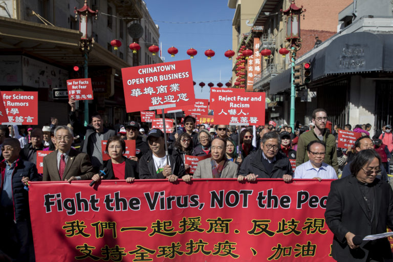

Asian hate started as early as the 1870s with the conclusion of the railroad constructions. White workers were outraged and claimed that Chinese are taking over their jobs. This led to anti-Chinese rioters to burn down Chinatowns across the nations. Later in 1882, the Chinese Exclusion Act was established, prohibiting all immigration by Chinese laborers. It was the first federal act to bar a specific ethnic group from entering the United States and it was legal for 61 years. Then during World War 2, over 120,000 Japanese people were forced to give up their homes and put into internment camps, living in inhumane environments. After World War 2 was over, Asian Americans eventually regained stability and these success stories led to an enduring stereotype, a misconception that Asian Americans have made it, that we are model minorities. Asian hate has been rooted in our history and the patterns are starting to repeat.
With the pandemic, Asian Americans have become the target of hate as people started referring to the CoronaVirus as the Chinese Flu. As it started off as making remarks and saying racists slurs, it has now advanced to attacking asian American people on the streets and even pushing them into subways. According to the data, the surge in reported anti-Asian hate crimes is significantly higher than it was in 2020, when they increased by 124 percent compared to the year before. New York City had a particularly drastic rise, from 30 to 133 anti-Asian hate crimes, a 343 percent increase. San Francisco also experienced an alarming jump, from nine to 60 crimes, a 567 percent increase. And Los Angeles had a similarly sizable hike of 173 percent.